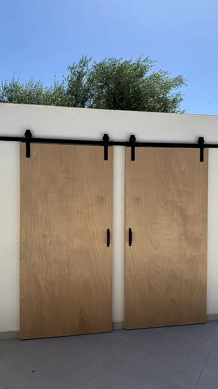

Proyectos
Reformas reales en Empuriabrava, Roses y Figueres. Entra en cada una para ver qué se hizo y todas las fotos.
Todos los proyectos

Reforma de estudio de 30 m² en Empuriabrava
Empuriabrava · Reforma integral
Transformación completa de un estudio de 30 m²: cocina nueva, baño, parquet, puertas y pintura.
Ver proyecto
Reforma completa de baño en Empuriabrava
Empuriabrava · Reforma completa
Baño hecho de principio a fin: ducha con mampara, mueble de madera a medida con resina epoxi y espejo retroiluminado.
Ver proyecto
Reforma integral de vivienda con piscina
Figueres · Reforma integral
Renovación del exterior, la zona de piscina y los dormitorios con nuevos suelos, revestimientos y mobiliario a medida.
Ver proyecto
Puertas correderas de madera en Roses
Roses · Reforma parcial
Preparación e instalación de puertas correderas de madera con riel de estilo granero en una terraza exterior.
Ver proyecto
Tarima exterior de madera en Empuriabrava
Empuriabrava · Reforma parcial
Instalación de tarima de madera en la terraza y el pasillo exterior de una vivienda, con un acabado cálido y natural.
Ver proyectoCuéntanos qué quieres reformar
Te respondemos lo antes posible con una propuesta clara y sin compromiso.